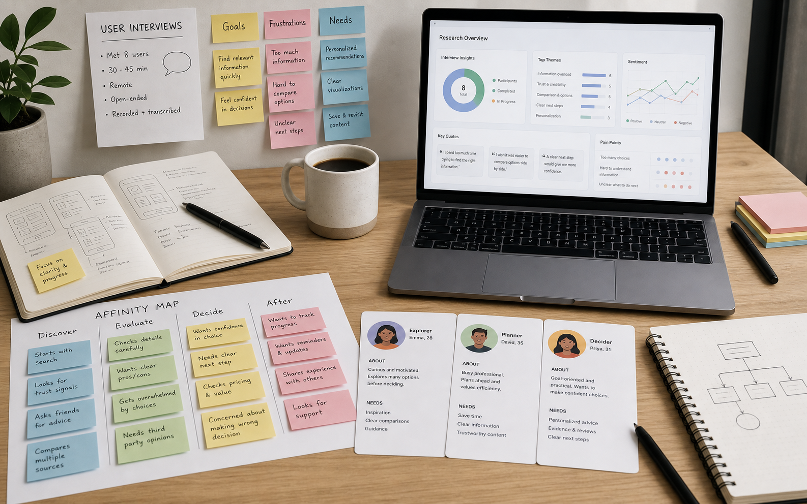

UI + tillgänglighet
Dashboard för bättre beslut
Ett produktdesigncase där information gjordes mer skannbar med tydligare hierarki, komponenter och tillgänglighetskontroller.

- Roll
- Informationsarkitektur, UI-design, komponenter och test.
- Metoder
- Heuristisk genomgång, wireframes, komponentbibliotek och kontrasttest.
- Resultat
- Snabbare överblick, konsekventare UI och tydligare prioritering av nyckeldata.
Utmaning
Dashboarden innehöll mycket information, men användare behövde lägga för mycket energi på att förstå vad som var viktigast.
Målet var att skapa bättre överblick utan att förenkla bort viktig data.
Process
Jag analyserade hierarkin, grupperade information efter användarens beslut och byggde komponenter som kunde återanvändas.
- Prioriterade innehåll efter beslutssituationer.
- Skapade komponenter för kort, status och datavisning.
- Kontrollerade kontrast, läsbarhet och skannbarhet.
Lösning
Den uppdaterade dashboarden fick tydligare rubriker, luftigare gruppering och visuella prioriteringar som hjälper användaren läsa från viktigt till detaljerat.
Här kan du lägga till skärmbilder av dashboarden, komponentbiblioteket och eventuella mätvärden från test.
Nästa projekt
Förenklat bokningsflöde